“EQBuddy understands who I am playing, what I can do, what I own,
what I am working on, how I actually perform, and where I have been — then quietly
helps me decide what to do next.”
Log-only — reads your /log file, nothing elseLocal-first — no account, no cloudPersonal — not competitiveWindows + your phone on the LAN
0
game-memory reads — ever
0
accounts or cloud services required
0
telemetry by default
11,000+
items in the built-in offline catalog
01
While you play, EQBuddy is one thin tray
Minimized, the whole app is a slim strip of chips — DPS, XP/hr, procs,
loot, motes, coin, whichever you star. Everything deeper is one gesture away:
hover a chip to peek, click to keep the card open,
drag things where you want them. Nothing interrupts, ever. Every capture and clip on
this page is a real build driven by the repo’s own harness — character names are test
fixtures.
01 · Glance
A strip of chips, not a dashboard
The tray shows your session across the metrics you pick — damage, experience
rate, procs, loot, motes, coin. It stays small enough to sit over the game and
be ignored until you want it.
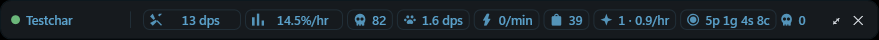
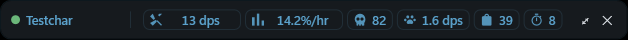
A different loadout — down to your pet’s own DPS and a
buff-set chip counting what’s up, if that is what you watch.
02 · Build it
Star what you watch — the tray builds itself
Name, DPS and XP-or-healing are always on. Everything else on the tray is a
★: expand the tray into the full widget, star pet damage and motes right on
their cards, and minimize — the bar comes back wearing exactly those chips
beside whatever you starred before. Then make the front row yours: drag the pet
chip up beside DPS and it joins the always-on numbers, and the third slot swaps
to healing on its own the moment healing is what you are doing.
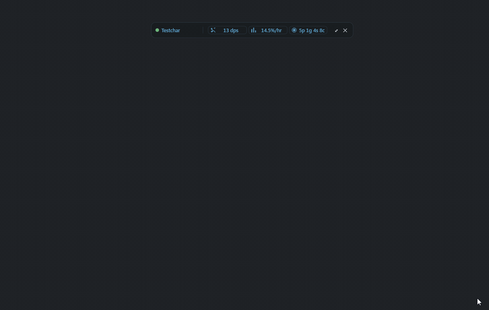
03 · Hover to peek
The detail is a hover away
Mouse over a chip and its card opens right under the tray — what dropped and
at what rate, this fight’s damage, whatever that chip watches. Slide to another
chip and the card follows; move away and it is gone. Every chip’s tooltip says
exactly this: “hover to peek, click to keep it open.”
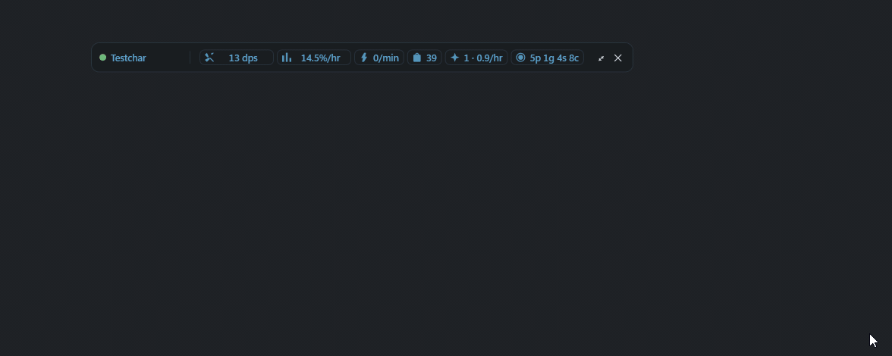
04 · Click to keep
Click, and the card stays
A peek you want to watch — a camp’s drops, a fight’s numbers — is one click
from staying open. The pinned card keeps updating live while you play, and its
✕ puts it away; ⧉ pops the same surface out into a full window.
05 · Make it yours
Drag chips to reorder — drag the card anywhere
Chips ride the tray in your order: drag one to move it, and the tooltip on
every movable chip says so — “drag to reorder.” The peek card can be
dragged off the tray and parked where you want it, and its edge resizes it.
“Follow the HUD again” in Edit HUD undoes the park whenever you want the
default back.
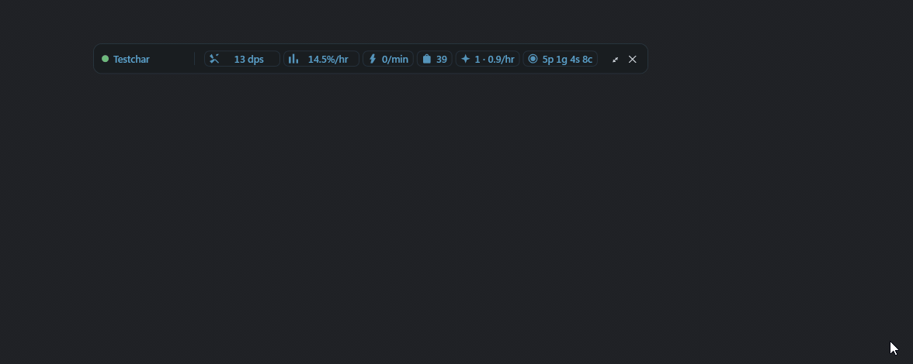
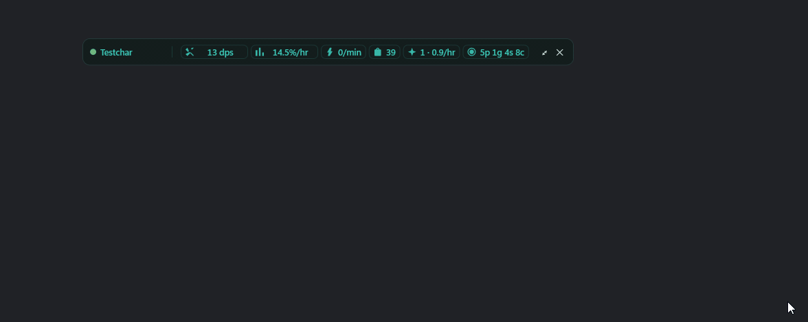
The loot peek knows what you are fighting
With nothing targeted it tells you so — “Swing at something — or /consider it —
and its possible drops appear here.” Target or /consider a creature and the
same card becomes its drop table: eqlwiki’s live rate beside your own observed
count, for the thing in front of you right now.
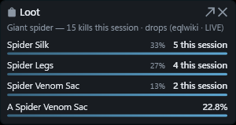
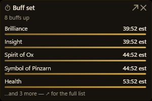
02
Guided walkthroughs that answer “what should I do next?”
The Guide is the reworked quest surface. Open a reward you care about and
every step says who, where and what; one step is pinned as
NEXT; and anything you already earned is flagged
ready to turn in before you think to ask.
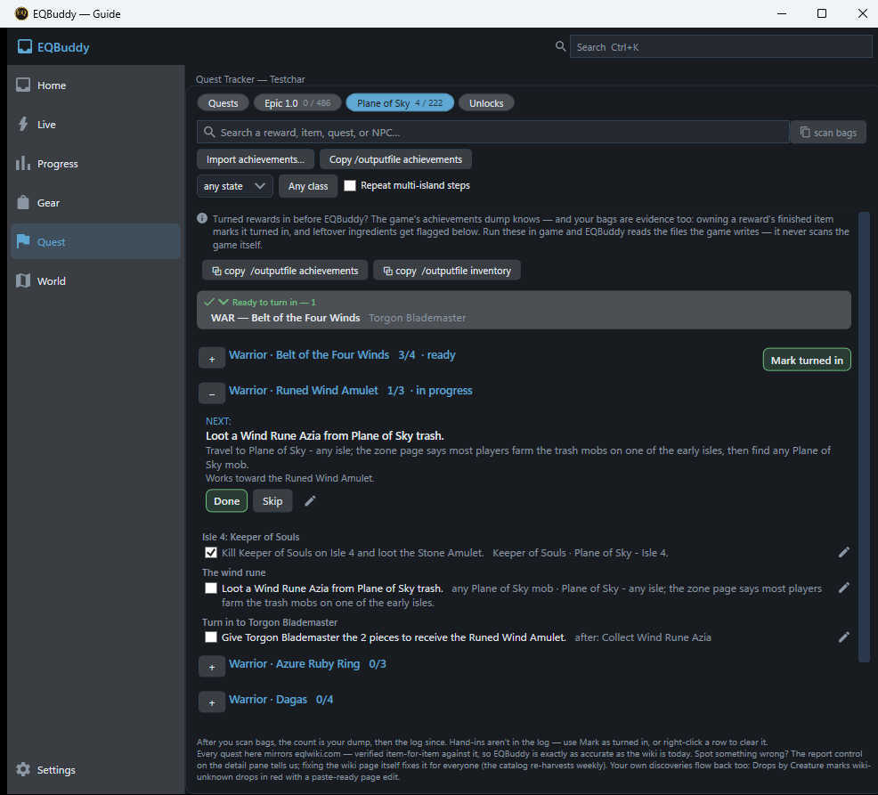
Next, pinned
One step at the top: what to do, where to go, and what it works toward —
with Done and Skip, because you play in your
order, not the wiki’s.
Who · where · what
Every step names the mob or NPC, the isle or zone, and the item —
“Kill Keeper of Souls on Isle 4 and loot the Stone Amulet.” No step
assumes you already know the route.
Ready to turn in
Loot in your log ticks the checklist by itself, and a bag scan counts what
you collected before EQBuddy. When the pieces are together, the reward is
flagged — one click marks it turned in.
Honest where the wiki is
Every quest mirrors eqlwiki, item for item. A step the wiki cannot answer
says exactly what is missing — and your own discoveries flow back as
paste-ready wiki edits, so the first player who knows fixes it for everyone.
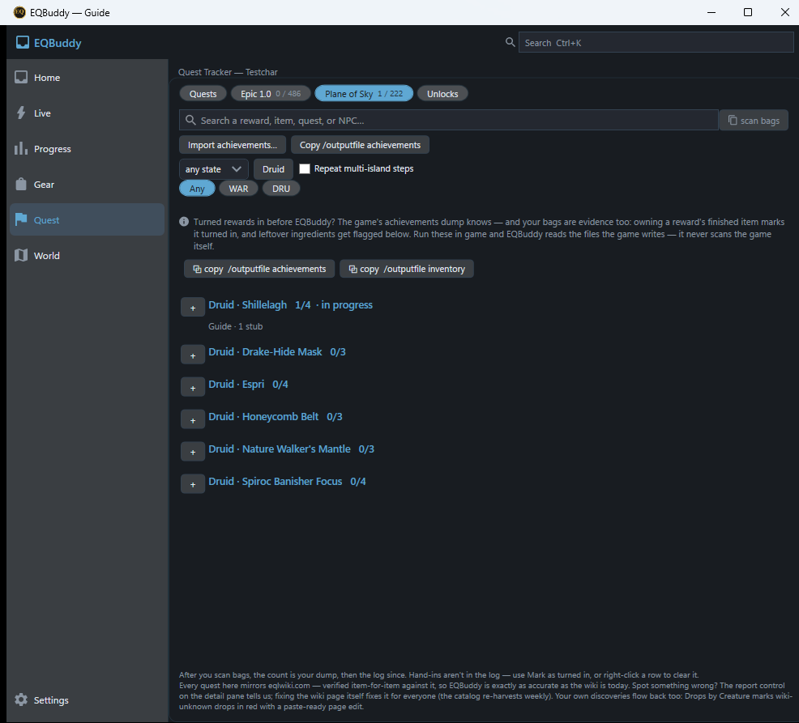
Folded, the Guide is a quiet list — name, pieces and state
on one line per reward. Open only the one you are working.
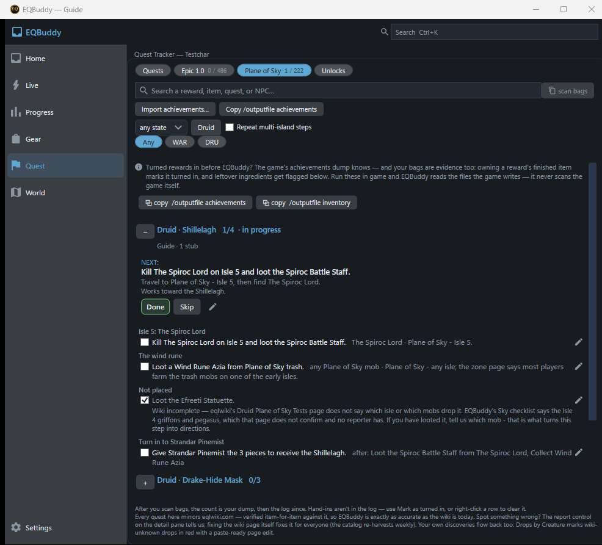
One reward opened. Note the step that admits eqlwiki does
not name the drop yet — a guess in confident type is the one thing the Guide
refuses to print.
03
Where the first Evolved release is headed
The tray and the Guide are real today. The initial v2 release aims the
same chain at the two questions every player actually asks — planned work, said
plainly: there is no Evolved download yet and no date to promise.
Coming for Evolved v2
Gear planning — “How do I upgrade my main hand?”
The Gear Locker already compares every wearable you own, slot by slot. The v2
release connects it forward: name the meaningful upgrade for what you are wearing
now, the quest or mob that provides it, and your progress against it — already
counted from your achievements, bags and log.
The deep dive walks this question end to end.
Coming for Evolved v2
Hunt-next — “Where should I hunt for EXP?”
Kills & Drops already measures what each camp pays you — kills per
hour, xp per creature, coin. The v2 release turns that evidence into a suggestion:
where your own numbers say the next sitting is best spent, cross-checked against
the wiki’s shared truth.
The deep dive shows the evidence it draws on.
What that promise rests on
The evidence surfaces these answers need — the Locker, Kills & Drops, Progress
history — are built and shown in the feature tour below.
What v2 adds is the connected answer on top of them. When any of it ships, it ships
in a release’s What’s New, not in a landing-page tense change.
04
One question, answered from your own play
Not a generic “best in slot” list. EQBuddy connects what you already own
and have done into one personalized path — gear → quest → mob → camp →
route — learned from your own log.
Own · Gear
Gear
Which attainable upgrades are meaningful for what you are
wearing now — and when a candidate becomes better than what you have.
Work toward · Quest
Quest
Which quest or mob provides it, what you are working on, and
what you are already able to turn in.
Hunt · Mob
Mob
Whether that content is realistic — judged from your own fight
history, not someone else’s.
Sit · Camp
Camp
Spawn timers that learn from your kills — and know the
difference between an open-world camp and a raid instance.
Travel · Route
Route
How to get there with travel you already unlocked.
I log into my character. EQBuddy recognizes the classes I am playing and
remembers what I unlocked before. When I want more, I open it — and it can tell me
which upgrades are meaningful, which mob or quest provides them, whether that
content is realistic from my own history, and how to get there.
— the Evolved north star, abridged from
PRODUCT.md
05
The game is on your monitor. Everything else goes somewhere else
Two coordinated desktop surfaces plus an optional mobile second screen.
The HUD earns space only for information that may change your next action within
seconds or minutes; research and review belong in the full app, or on the phone you
look away to.
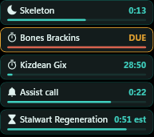
EQBuddy HUD
A glance, not a dashboard
Small, movable, always-on-top while you play. Deadline information only —
mez and charm countdowns, spawn-due chips, watch alerts, buff expiry.
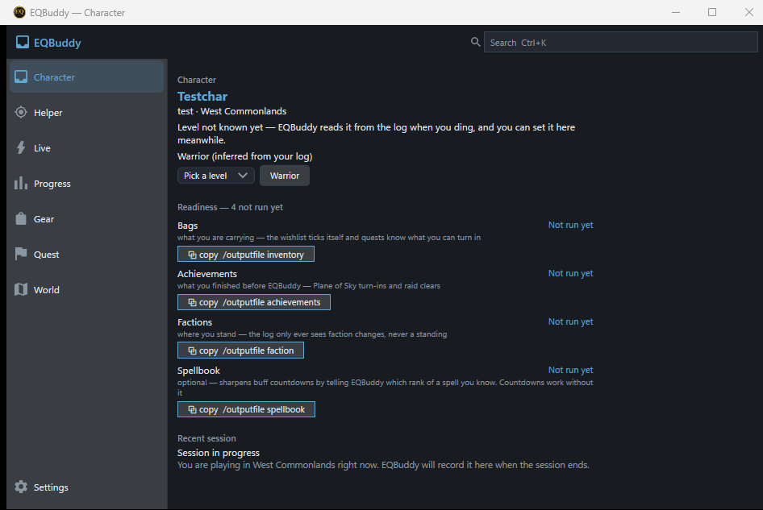
Full Windows app
One coherent shell
Persistent primary navigation — Home, Live, Progress, Gear, Quests, World,
Search, Settings. One click to the domain; one more to the answer.
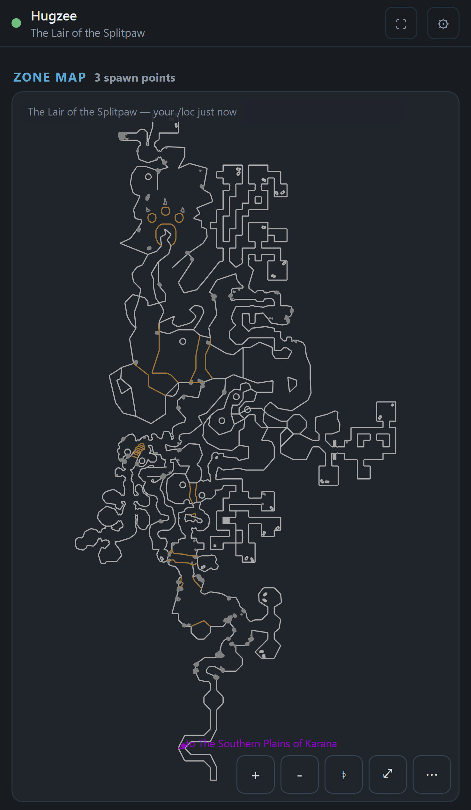
EQBuddy Mobile
The second screen
Optional and LAN-only, hosted by the Windows app — map and camps, tracked
quests, item and gear lookup, route guidance. Never a required account.
Glance first→expand for
live detail→full application for analysis
06
What it already does
Captured from real builds with the repo’s own screenshot harness,
all in the Blue-grey palette — one of several themes EQBuddy ships. Character names
are test fixtures.
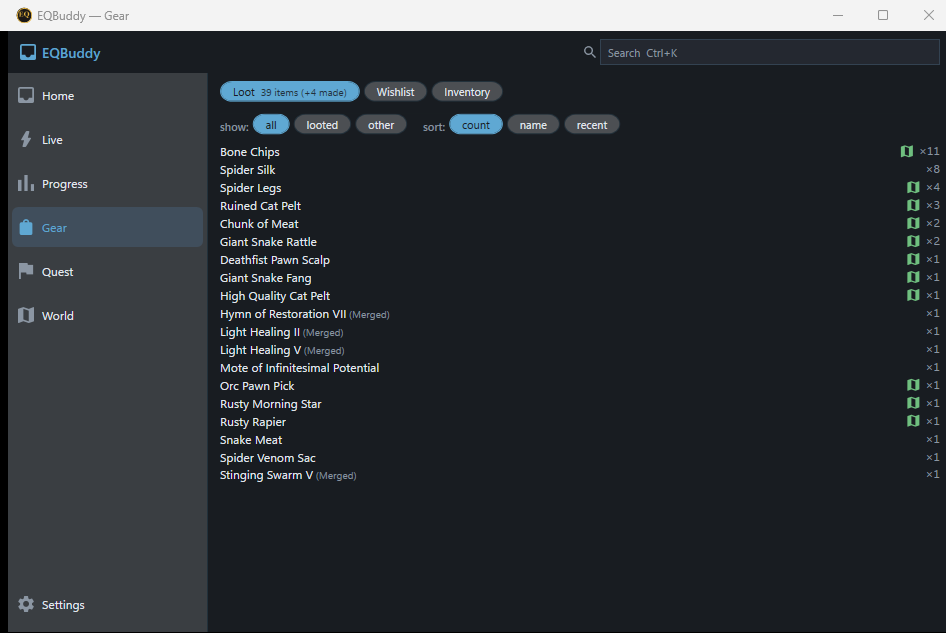
Gear & Loot
A Gear Locker that compares every wearable you own per slot, your loot with
personal drop rates, and a wishlist that ticks itself as items arrive.
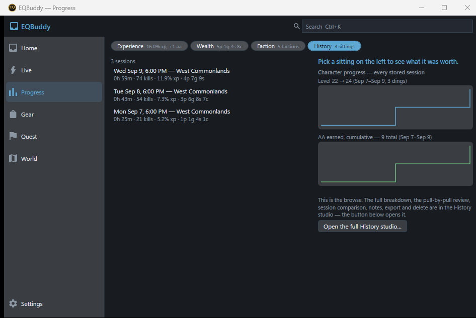
Progress
Every session lands in a local, searchable history — experience, wealth,
faction, and level and AA charts across every sitting you have stored.
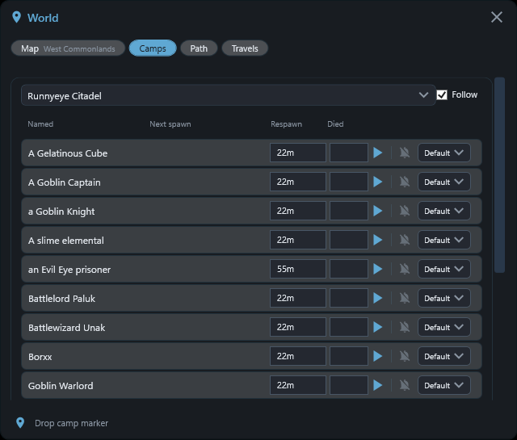
World
Zone maps with your position from /loc, camps you have marked, and spawn
timers learned from your own kills counting down beside the map.
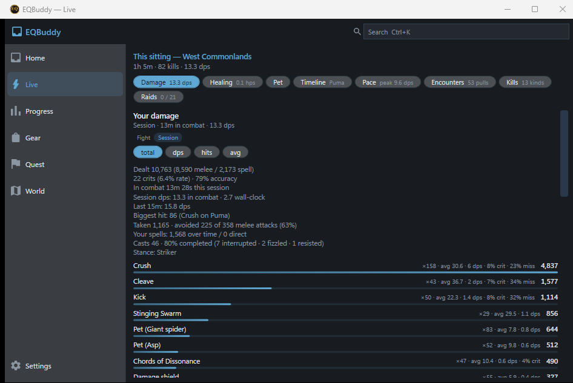
Live meters
Damage, healing, pet and a fight timeline that draws every swing on one
canvas. Your numbers, nobody else’s — there is no party meter here.
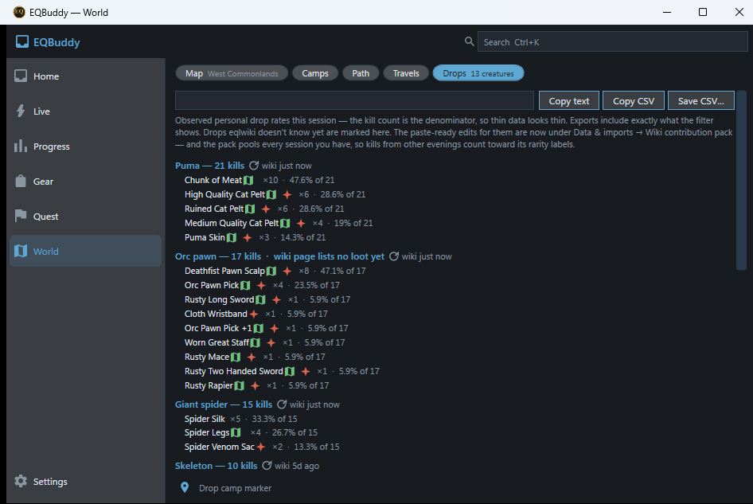
Kills & Drops
Observed personal drop rates per creature — the kill count is the denominator —
with exports, and drops eqlwiki doesn’t know yet flagged for a paste-ready page
edit.
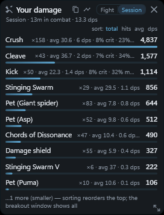
Breakout windows
Any tray chip’s surface pops out into its own live window — this fight or the
whole session, updating as you play, for exactly as long as you want it there.
07
The deep dive — how it actually helps
Everything above is the overview. This is the long-form version: two
real questions a player asks, walked through the product step by step, with the
screenshots as evidence and an honest account of where each answer comes from.
07.1 · Orientation
How to read this
EQBuddy’s own rule is evidence before confidence,
so this page holds itself to it.
Everything marked observed is a number
EQBuddy counted in your log — your kills, your drops, your xp. Everything marked
estimated is inference and says so. Every
screenshot on this page is a real capture from the repo’s screenshot harness
against a staged test profile — no mockups, no composites. Character names are
test fixtures.
The shape of every answer
Who you are playing → what you own → what you are working on →
what to do next. Both walkthroughs below are that one shape.
07.2 · Worked example
“How do I upgrade my main hand?”
The question every player actually has, and the one a generic
“best in slot” list answers worst — because it doesn’t know what you own, what
you can reach, or what you’ve already half-finished.
1Start from what you own
The Gear Locker reads your inventory dump and compares every wearable you own,
slot by slot, against the wiki’s base stats. When something you are carrying is
at least as good on every stat and better on one, the weaker item is marked
outclassed — “a dump candidate by arithmetic, not taste.”
2Name the upgrade and find its source
The Quest tracker’s search takes a reward, an item, a quest or an NPC. Type
the weapon you want and you land on the quest that provides it — with your own
progress against it already counted, because EQBuddy imported your achievements
and scanned your bags.
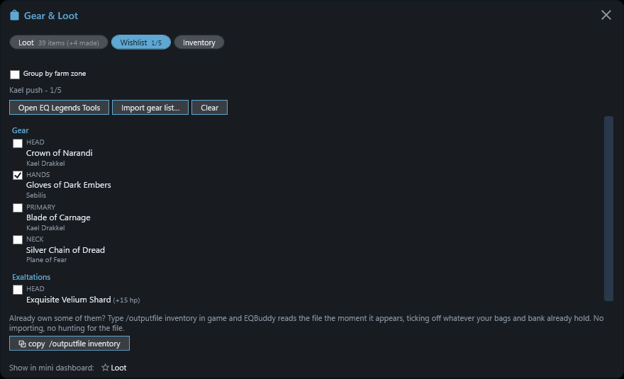
A named gear push, slot by slot, each target with its source —
one already ticked, and the /outputfile command that ticks the rest shipped as
a one-click copy. observed
3Let the Guide run the middle
From there it is section 02: the reward breaks into
steps, NEXT names the one that matters now — kill The
Spiroc Lord on Isle 5 and loot the Spiroc Battle Staff — and looting the
item ticks the box from the log by itself.
4Camp on your own clock
If the source is a named mob, the World map shows the camp with a spawn timer
learned from your kills — counting down next to the map, distinct from
wiki averages, and honest about being an estimate until it has seen the cycle.
5Get there with what you have
The route uses travel you have actually unlocked — not the teleport network
of a character you don’t play.
Why this beats a spreadsheet
Each step is fed by the previous surface: the Locker knows your slots, the
tracker knows your turn-ins, the Guide knows your loot, the map knows your
kills. You never re-enter a fact EQBuddy already read from the log.
07.3 · Worked example
“Where should I hunt next for EXP?”
EQBuddy won’t pretend there is one global best answer. What it
has — and a forum thread doesn’t — is what this character actually
earns, camp by camp.
1What is this camp paying right now?
Kills & Drops keeps the running answer during the sitting: kills per
hour, and per creature the average kill time, the coin, and the experience each
one is worth to you.
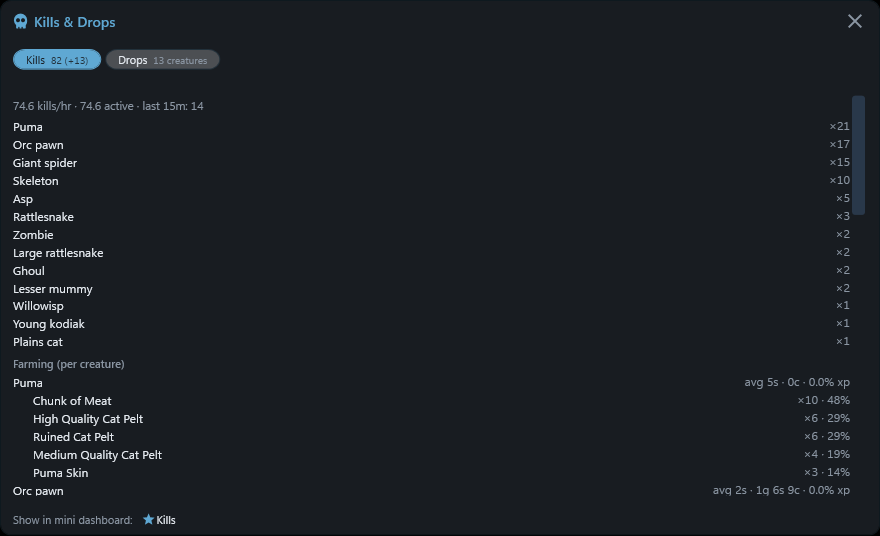
One session’s evidence: 74.6 kills an hour, and what each creature
actually pays — orc pawns die in 2 seconds for coin, pumas take 5 and pay in
pelts at this character’s own observed rates. That is a hunting decision, made
from your own numbers.
observed
2Compare against your own history
Progress keeps every stored sitting — xp/hr, levels, AA — so “was the new
zone actually better than the old camp?” is a chart, not a feeling. The World
page’s Drops tab remembers what each creature paid across sessions, not just
tonight.
3Cross-check the shared truth
Zone level ranges and spawn mechanics are the community’s shared knowledge,
and eqlwiki is its home. EQBuddy links you to the page rather than paraphrasing
it — and when your log shows something the wiki doesn’t know, it drafts the
page edit for you to paste.
This-character, not best-character
A druid who roots and rots clears a camp at a different rate than the wiki’s
median visitor. Your kills/hr and xp-per-creature are the only numbers that
were measured on you — that is why they are the ones EQBuddy shows.
07.4 · Judgement
Where each answer comes from
An honest scorecard. EQBuddy is not a replacement for the wiki —
it is the tool that connects the wiki’s shared truth to your private evidence,
and sends corrections back.
The question
A wiki tab alone
EQBuddy over your log
Net
What does the quest need?
The source of truth
Mirrors eqlwiki item-for-item, re-harvested weekly; the wiki stays the tie-breaker
Same truth, in the tool
What have I already done?
—
Achievements import + bag scan + the log since; turn-ins and half-collected steps counted
Only your machine knows
What actually drops here, how often — for me?
Lists what drops
Observed rates with your kill count as the denominator
And unknown drops become paste-ready wiki edits
When is my camp due?
Respawn notes
Timers learned from your own kills, counting down beside the map
Your clock, not an average
Was tonight better than last week?
—
Stored session history with level and AA charts
Memory a browser doesn’t have
Endgame mechanics nobody has confirmed
Sometimes silent
A stub that says what is missing and asks the player who knows
Honesty, not coverage
How good are the other players?
—
Never — by principle, not by gap
Not a feature. Not ever.
07.5 · Judgement
The honest limits
A precise-looking wrong number is worse than none
Curated game data — spawn timers, quest catalogs — is never auto-written from
a scrape. The weekly wiki refresh flags conflicts for a person to
resolve, and where quest data conflicts and can’t be resolved, EQBuddy matches
the wiki on purpose: being wrong the same way as the community’s own reference
is recoverable; being uniquely wrong is not.
The same rule shapes the Guide’s stubs (a step without a source says so
instead of inventing one), the Locker’s “stats not fetched yet” bucket, and the
observed/estimated badges you saw above. If EQBuddy tells you something about
Norrath, you should be able to ask it how it knows — and get a real answer.
08
Hard lines — these do not move
The product is private, local, personal and non-judgmental. These are
not settings; they are what EQBuddy is.
Personal, not competitive
EQBuddy measures the player using it. It is not a party or raid ranking tool,
a leaderboard, or a way to judge other people — and it never will be.
Log-only and local-first
No game-memory reads, no packet inspection, no gameplay automation, no
hidden-information extraction. No required account, no required cloud, no
telemetry by default. Your history stays on your machine unless you export it.
Evidence before confidence
A precise-looking wrong number is worse than a clearly identified estimate.
Where a decision depends on it, EQBuddy distinguishes
observed from
estimated — in the model first, in the UI
where it matters.
No modal interruptions
Looting a quest item is a dismissible toast or chip, not a dialog that steals
the fight. Proactive where useful, never noisy or intrusive.
09
Today, honestly
Evolved is the direction, not a download yet. Here is exactly what you
can get right now, and under which license.
Available now
Get EQBuddy 1.x — MIT
The current public releases are the 1.x line: the always-on-top widget that
reads your log live — kills and DPS, fight timeline, loot, spawn timers, quest
tracker, Gear Locker and more. Final Linux and macOS 1.x builds stay downloadable
and usable (v1.99.18
is the final legacy tag). Every release is code-signed.
Published 1.x is and stays MIT. Nothing about Evolved
revokes those grants.
In development
Watch Evolved take shape
EQBuddy Evolved (v2) is being built in the open in this repository — the shell,
the Guide, and the chain above. It is proprietary
(LICENSE-EVOLVED.md):
readable so the direction is checkable, not reusable. There is no Evolved download
and no date to promise you.
When something player-noticeable ships, it is in the release’s
What’s New — with the reporter credited by name.
“I should not have to understand EQBuddy’s internal windows, cards,
menus, files, or data pipelines to get that answer.” — the last line of the north star.
That is EQBuddy Evolved.